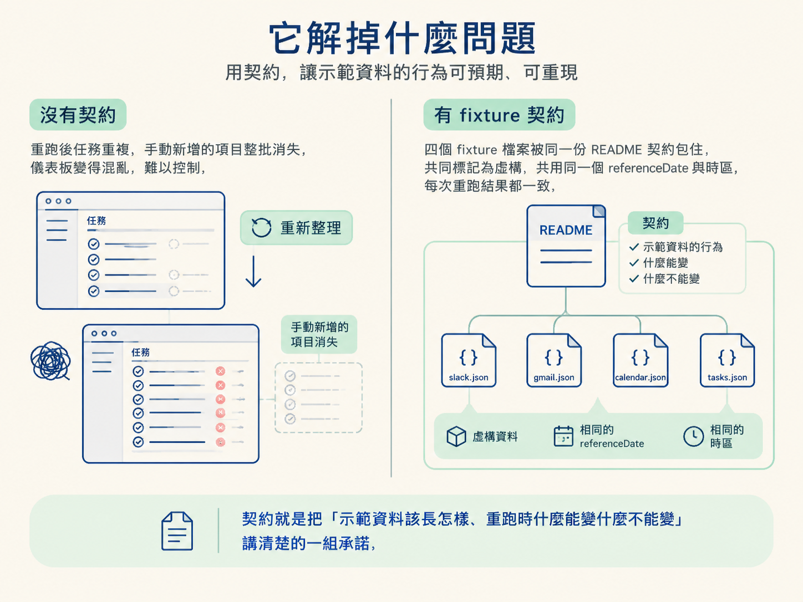
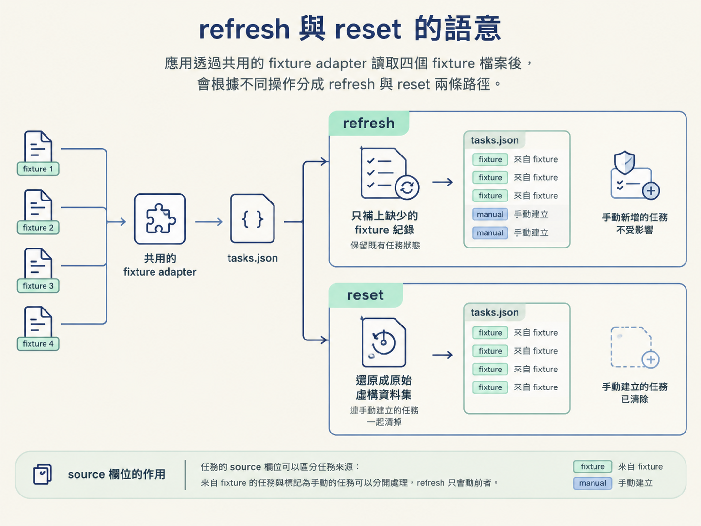

fixture 資料契約是一組寫進 fixture README 的承諾，規定生成式 app 的示範資料長什麼樣、時間怎麼算、重新整理時哪些東西可以動、哪些不能動。
上一課把 fixtures 當成「視覺範例的素材」。但一份示範資料不只要好看，還要禁得起反覆重跑。想像你正在示範這個儀表板，示範到一半停下來按了重新整理，結果每一筆任務都變成兩份，你剛剛手動新增的任務整批消失，這個 app 就沒辦法被信任。
所以 Mission Control 的 fixtures 除了資料本身，還附了一份 README，把資料的行為講清楚。這一課把契約逐項列出來，方便你照著對規格。

四個 fixture 檔案（slack.json、gmail.json、calendar.json、tasks.json）的開頭共用同一組後設欄位。
| 欄位 | 值／型別 | 約束 |
|---|---|---|
fictional | true | 標記整份資料都是虛構，不是真實紀錄 |
notice | 一段文字 | 用自然語言再聲明一次：檔案裡的人名、訊息、事件、連結皆為虛構 |
referenceDate | 2026-08-11T09:30:00-05:00 | 四個檔案共用同一個固定時間基準 |
timeZone | America/Chicago | 所有時間都以此時區解讀 |
每個檔案另外帶一個陣列欄位裝資料。tasks.json 的紀錄放在 tasks 陣列裡，其餘三個檔案的紀錄放在各自的陣列裡。
| 規則 | 規格 |
|---|---|
| 固定時間基準 | 四個檔案共用同一個 referenceDate（2026-08-11T09:30:00-05:00），時區固定為 America/Chicago。時間不隨「現在」變動，因此排序每次都一致。 |
| 穩定 ID | 每一筆紀錄有不會變動的識別碼，重新整理某個來源時不會把同一筆資料重複插入。 |
| 檔案 | 內容 | 資料性質 |
|---|---|---|
slack.json | 虛構的頻道訊息 | 唯讀 |
gmail.json | 虛構的 email 預覽，寄件者網域一律為 example.com | 唯讀 |
calendar.json | 虛構的會議與專注時段 | 唯讀 |
tasks.json | 播進看板每一欄的任務，包含被阻擋與等待他人的狀態 | 可建立、可更新狀態 |
| 欄位 | 說明 |
|---|---|
id | 紀錄的識別碼，穩定不變 |
title | 任務標題 |
description | 任務內容描述 |
status | 對應看板的欄位 |
source | 標記這筆任務來自哪個來源 |
person | 相關的人 |
dueAt | 到期時間 |
sourceId | 交叉參照 slack、gmail、calendar 裡的對應紀錄 |
waitingOn | 選用；等待他人時填寫 |
url | 選用；相關連結 |
app 透過共用的 fixture adapter（轉接層）讀取這些檔案。「整理資料」分成兩種語意不同的操作。
| 操作 | 語意 | 對待手動任務的方式 |
|---|---|---|
| refresh | 插入缺少的 fixture 紀錄、保留既有的任務狀態 | 永遠不覆蓋使用者手動建立的任務 |
| reset | 刻意還原成原始的那份虛構資料集 | 連手動建立的任務一起清掉、回到初始狀態 |
任務的 source 欄位在這裡派上用場：來自 fixture 的任務與標記為手動的任務可以分開處理，refresh 只會動前者。

共同後設欄位、固定時間基準，加上一筆任務的形狀：
{
"fictional": true,
"notice": "Every record in this file is invented for a public workshop.",
"referenceDate": "2026-08-11T09:30:00-05:00",
"timeZone": "America/Chicago",
"tasks": [
{
"id": "task-001",
"title": "Run the workshop demo at phone size",
"status": "urgent",
"source": "slack",
"person": "Avery",
"dueAt": "2026-08-11T09:45:00-05:00",
"sourceId": "slack-001",
"url": "https://example.com/workshop/tasks/mobile-check"
}
]
}| 面向 | 限制 |
|---|---|
| 真實性 | 全部為虛構；不含任何真實 Slack、Gmail、行事曆或私人任務的內容 |
| 外部連結 | 一律使用 example.com 網域 |
| 帳號需求 | 這個 app 完全靠 fixtures 運作，不需要真實帳號或整合 |
| 時間 | 不隨「現在」變動，固定在同一個 referenceDate 與時區 |
fixture 資料契約是對假資料的一組承諾：共同欄位標記資料為虛構、固定referenceDate與timeZone、每筆紀錄有穩定 ID。四個檔案裡，slack／gmail／calendar 唯讀，tasks 可建立與更新。refresh 只補上缺少的紀錄、保留狀態、絕不動手動任務；reset 則把整份資料還原成初始狀態。app 必須完全靠這些 fixtures 運作，不需帳號。
相關做法：上一課是「用視覺範例提示」的實作步驟，這一課的規格就是那份實作要遵守的資料面約束。原理說明在下一課，它會拆解 Mission Control 的 prompt 結構，看它怎麼把視覺方向、fixtures 與功能清單，一行一行收斂成一份 Codex 能直接執行的 spec。